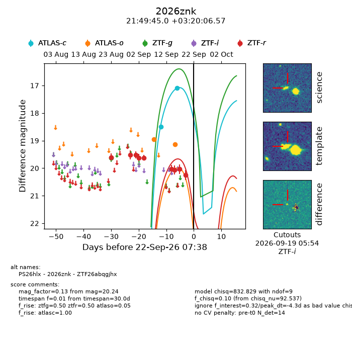
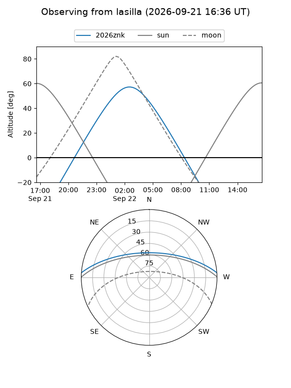
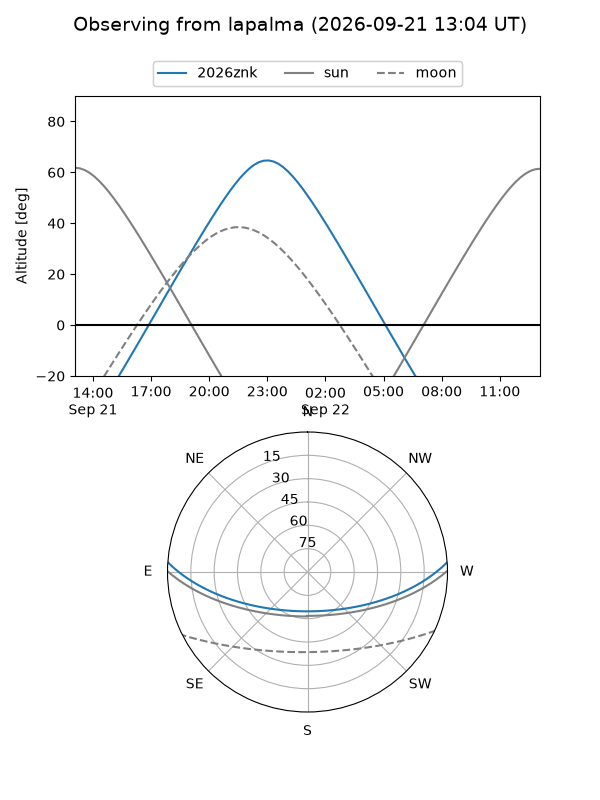
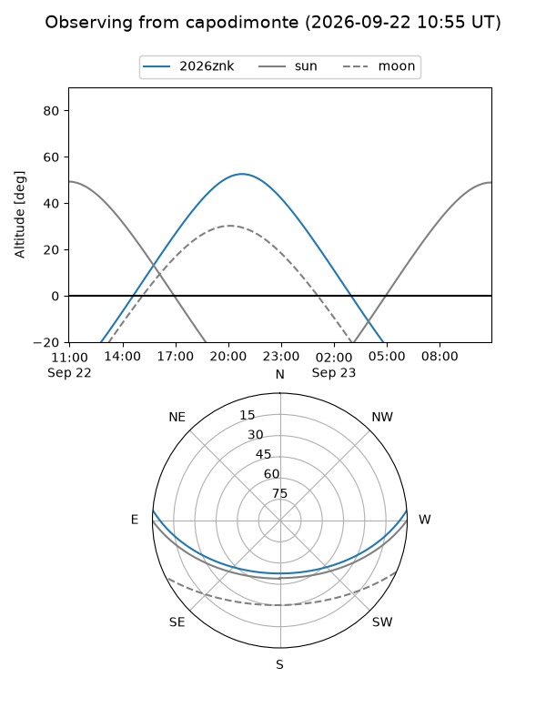
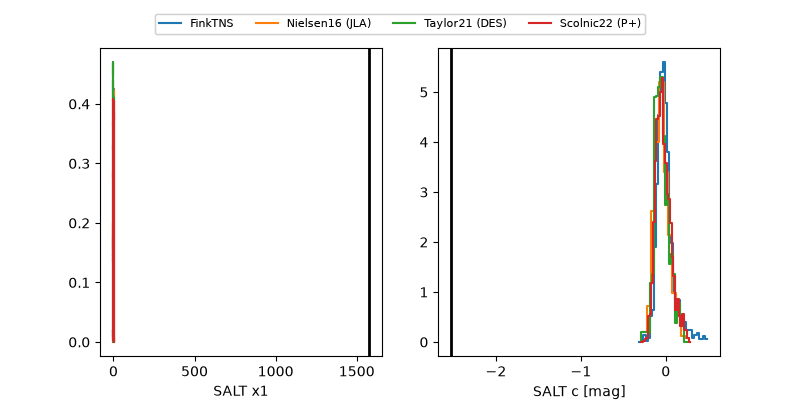

2026znk
Target 2026znk at 2026-09-22 07:40
Aliases and brokers:
FINK-ZTF: ztf.fink-portal.org/ZTF26abqgjhx
Lasair-ZTF: lasair-ztf.lsst.ac.uk/objects/ZTF26abqgjhx
ALeRCE-ZTF: alerce.online/object/ZTF26abqgjhx
YSE-PZ: ziggy.ucolick.org/yse/transient_detail/2026znk
TNS name: wis-tns.org/object/2026znk
Direct TNS query: direct search
alt names
ZTF26abqgjhx (ztf,fink_ztf)
2026znk (tns,yse)
PS26hlx (panstarrs)
Coordinates:
equatorial (ra, dec) = 327.4373,+3.33516
equatorial (HMS+DMS) = 21:49:44.96,+03:20:06.57
galactic (l, b) = (60.5022,-36.66085)
Flags:
TNS type: nan
peak dt: -4.3
Photometry:
last atlasc=17.09, atlaso=19.14, ztfg=19.62, ztfr=20.24
2 atlasc, 2 atlaso, 1 ztfg, 9 ztfr detections
Lightcurve

Visibility



Additional plots
